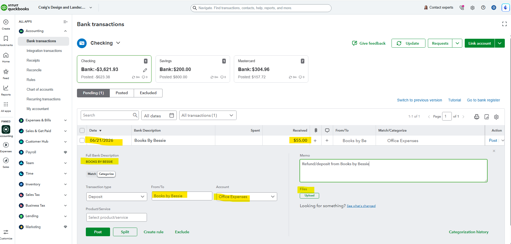

Purpose
Place bank transactions into the correct income or expense accounts so financial reports are accurate.
Simple Example
The Books by Bessie deposit is reviewed with the date, amount, customer/vendor name, account, memo, and possible attachment.
Simple Bookkeeping Decision Rule
Choose the category based on the business reason for the transaction, not only the bank description. Use the vendor, memo, receipt, and transaction type to decide.

Analysis
I reviewed a bank feed transaction for Books By Bessie dated 06/21/2026 with $55.00 received. The transaction form shows the customer/vendor field, account/category selection, memo field, file upload area, and the Post action. The selected category shown is Office Expenses, which demonstrates how transactions are assigned to accounts before posting.
Result
The transaction is ready to post after the category, name, memo, and supporting document are reviewed. Correct categorization helps keep the Profit and Loss report accurate.